Добро пожаловать в удивительный мир биологии!
Биология — это наука о жизни. Она изучает всё живое: от микроскопических
бактерий до огромных экосистем нашей планеты. На этом сайте вы узнаете,
как устроены живые организмы, как они взаимодействуют друг с другом и
окружающей средой.
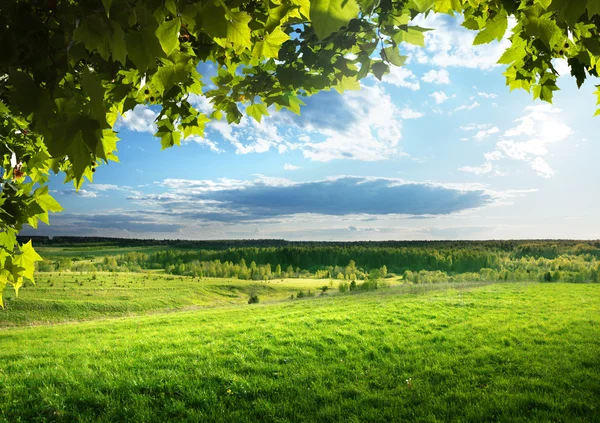

.jpg)
Раздел 1: Клетка
Клетка — основа жизни
Клетка — это минимальная единица живого организма. Все живые существа
состоят из клеток. Существуют два основных типа клеток:
прокариоты (без ядра)
эукариоты (с ядром)
Каждая клетка выполняет важные функции: питание, дыхание, деление.
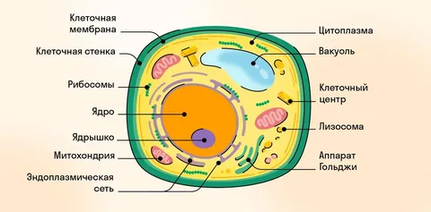
"
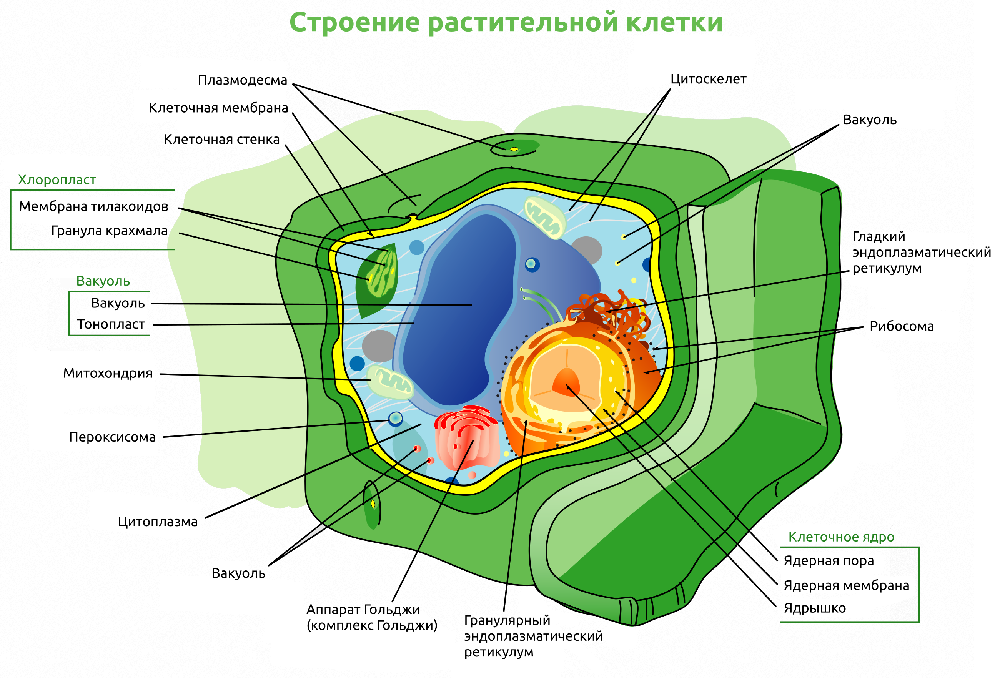
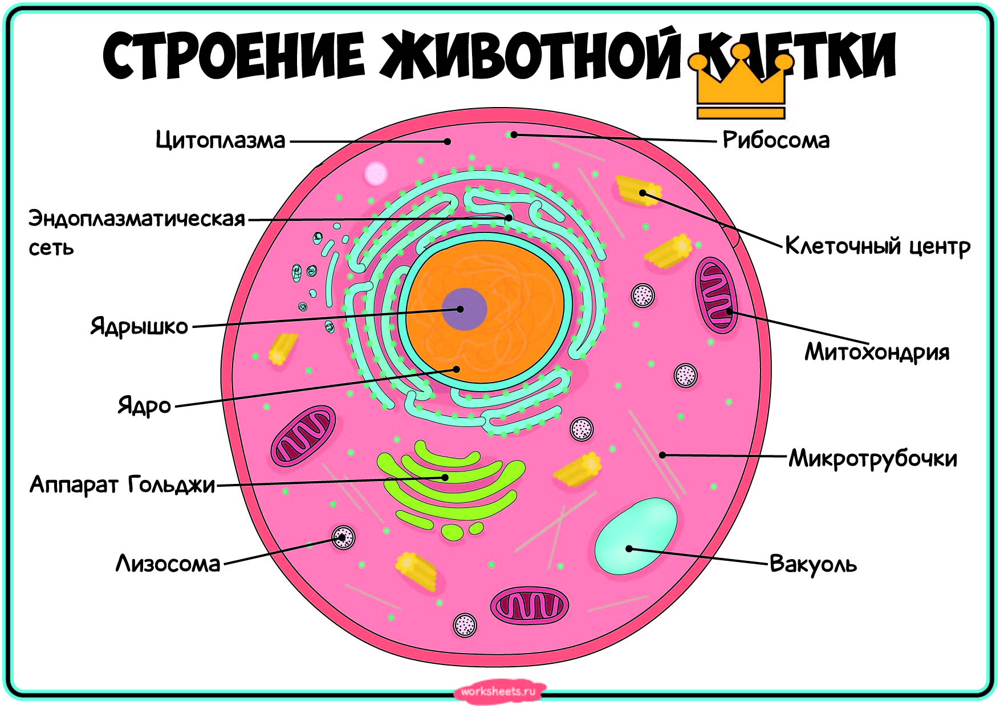
Раздел 2: Растения
Растения — источник жизни на Земле
Растения играют ключевую роль в природе. Они производят кислород и
являются основой пищевой цепи. Процесс фотосинтеза позволяет растениям
превращать солнечную энергию в питательные вещества.
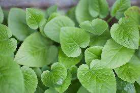
.jpg)
.jpg)
Раздел 3: Животные
Многообразие животного мира
Животные обитают во всех уголках планеты. Они делятся на группы:
млекопитающие
птицы
рыбы
насекомые
Каждый вид имеет свои особенности и приспособления к окружающей среде.
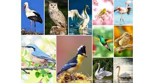
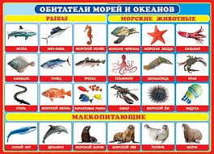
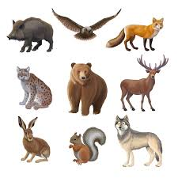
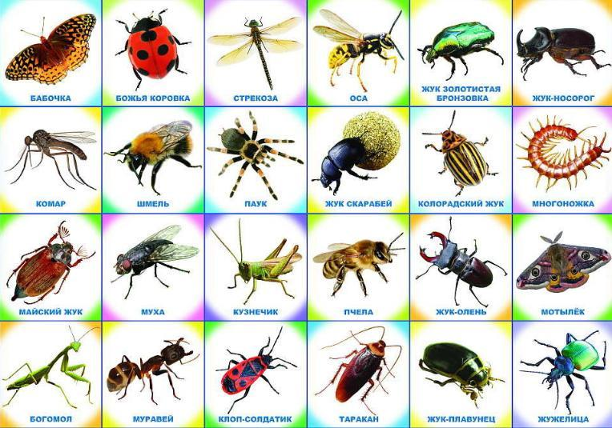
Раздел 4: Экосистема
Экосистема и её баланс
Экосистема — это совокупность живых организмов и среды их обитания. Все
элементы природы взаимосвязаны. Нарушение баланса может привести к
экологическим проблемам.
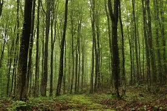
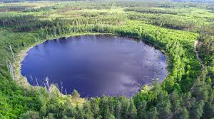
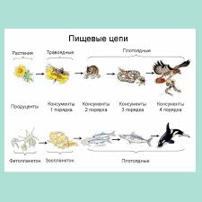
Раздел 5: Экология
Защита природы — наша обязанность
Человеческая деятельность влияет на природу. Загрязнение воздуха, воды и
почвы приводит к разрушению экосистем. Важно бережно относиться к
окружающей среде и защищать её.
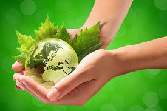
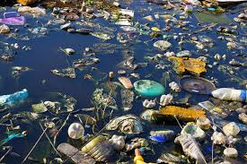
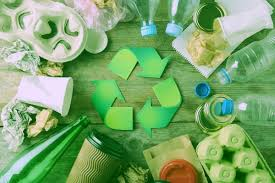
Раздел 6: Организм человека
Строение и системы организма
Организм человека — это сложная система, состоящая из органов и тканей,
которые работают вместе для поддержания жизни. Все органы объединены в
системы органов.
Основные системы организма:
нервная система
кровеносная система
дыхательная система
пищеварительная система
опорно-двигательная система
Каждая система выполняет свою функцию, но все они тесно связаны между
собой и обеспечивают нормальную работу организма.
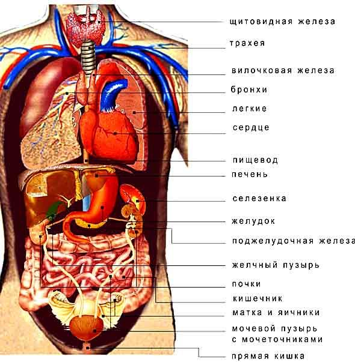
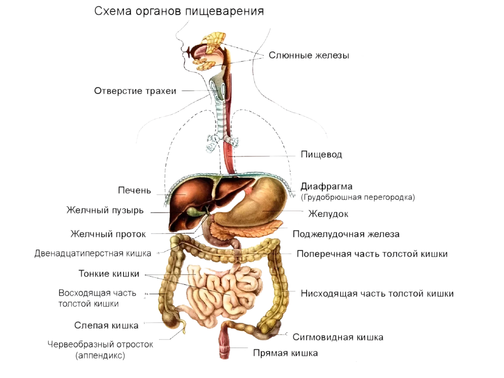
Раздел 7: Половые органы (хахахах я не могу, меня выносит, уверен вам
тема зайдет)
Репродуктивная система
Репродуктивная система — о да, вы точно по адресу, это одна из самых
важных систем организма, хотя про неё часто шутят, и так смешно, но
именно она отвечает за появление новых людей.
Можно сказать, что это система, благодаря которой у человечества всегда
есть обновления так как все это природа продумала.
Несмотря на то, что эта тема вызывает улыбку, её значение очень
серьёзное, с точки зрения биологии: тут ничего такого, без неё не было
бы ни одного из нас.
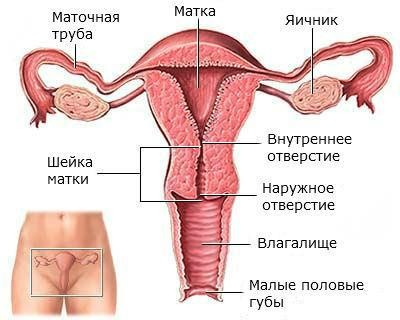
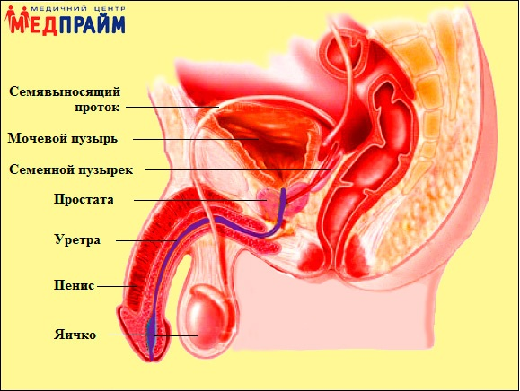